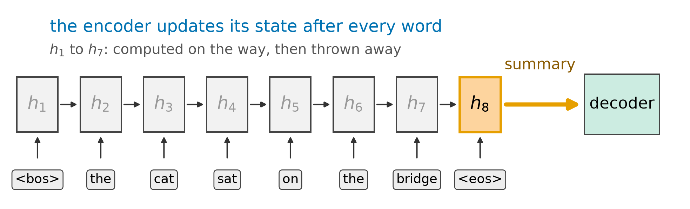
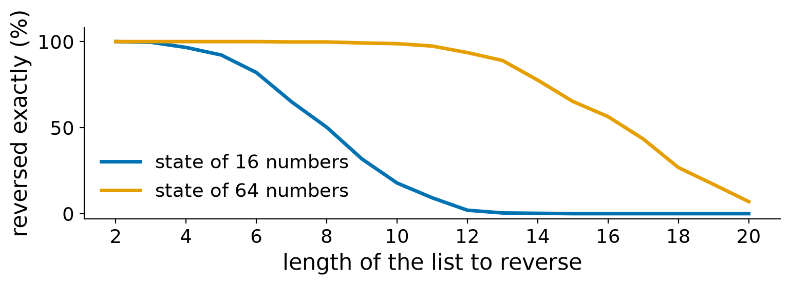
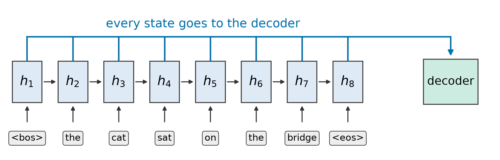
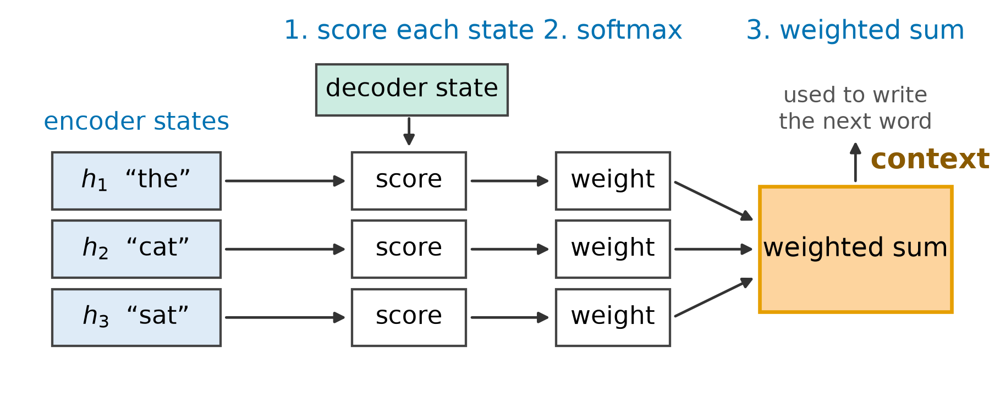
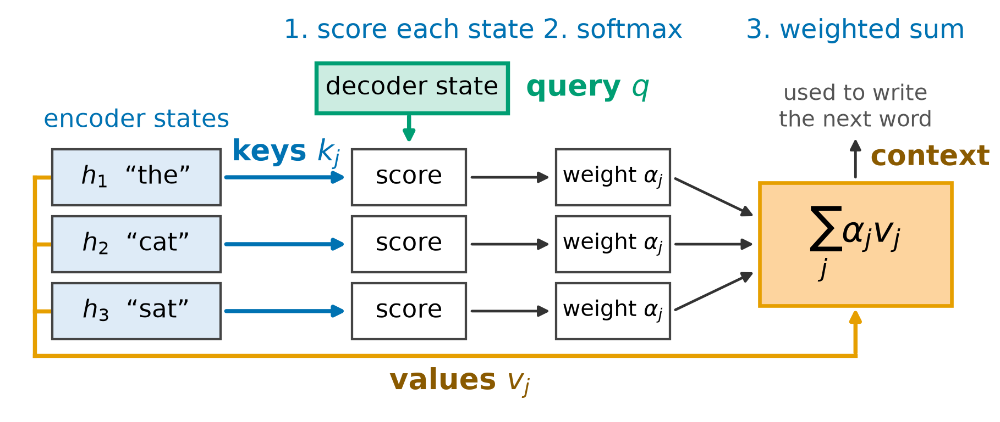
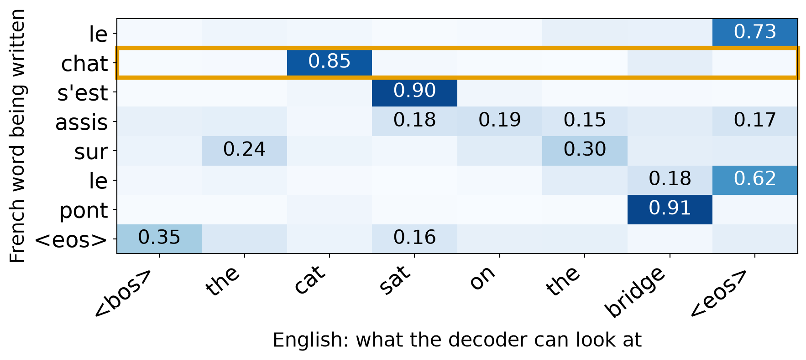
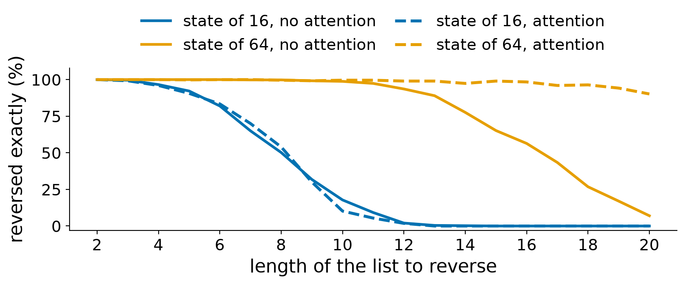
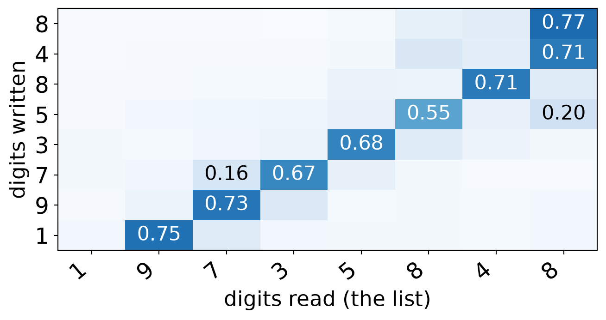

Advanced Machine Learning
This slide deck is still under active development. Expect changes before it is finalized.
What the decoder gets, and what it never sees


The question:
The encoder had a state at every word. Can the decoder use all of them, and the right one for the digit or word it writes?
At every step, let the decoder score each encoder state by how relevant it is right now, then read a weighted average of them.
Scores, weights, and a weighted average



\text{score}_j = \frac{q \cdot k_j}{\sqrt{d}} \qquad \alpha_j = \frac{e^{\text{score}_j}}{\sum_i e^{\text{score}_i}} \qquad c = \sum_j \alpha_j \, v_j
\text{score}_j = \frac{q \cdot k_j}{\sqrt{d}} \qquad q = [1, 3], \; d = 2
| Word | Key k_j | Dot product q \cdot k_j | Score |
|---|---|---|---|
| the | [2, 0] | 1×2 + 3×0 = 2 | 2 ÷ √2 = 1.41 |
| cat | [0, 2] | 1×0 + 3×2 = 6 | 6 ÷ √2 = 4.24 |
| sat | [1, 1] | 1×1 + 3×1 = 4 | 4 ÷ √2 = 2.83 |
\alpha_j = \frac{e^{\text{score}_j}}{\sum_i e^{\text{score}_i}}
| Word | Score | Exponential | Weight \alpha_j |
|---|---|---|---|
| the | 1.41 | e^{1.41} = 4.1 | 4.1 ÷ 90.6 = 0.045 |
| cat | 4.24 | e^{4.24} = 69.6 | 69.6 ÷ 90.6 = 0.768 |
| sat | 2.83 | e^{2.83} = 16.9 | 16.9 ÷ 90.6 = 0.187 |
c = \sum_j \alpha_j \, v_j
= 0.045 \cdot [2, 0] + 0.768 \cdot [0, 2] + 0.187 \cdot [1, 1] = [0.277, 1.723]
One decoder step of our trained translation model: writing “chat”, with all eight encoder states of “the cat sat on the bridge” to look at:
| <bos> | the | cat | sat | on | the | bridge | <eos> | |
|---|---|---|---|---|---|---|---|---|
| Score | -1.5 | -1.0 | 3.5 | -0.3 | -1.7 | -2.4 | 1.3 | -0.6 |
| Weight | 0.01 | 0.01 | 0.85 | 0.02 | 0.00 | 0.00 | 0.09 | 0.01 |
# the same model as before, plus attention (padding is masked out; left out here)
def forward(self, src, tgt_in):
# encoder: a state for every source word
states, state = self.encoder(self.src_embedding(src))
# decoder: a state for every word it has written
dec, _ = self.decoder(self.tgt_embedding(tgt_in), state)
# 1. score: every decoder state against every encoder state
scores = dec @ states.transpose(1, 2) / math.sqrt(states.shape[-1])
# 2. softmax: over the source words, so each row adds up to 1
weights = scores.softmax(dim=-1)
# 3. weighted sum: the context is a weighted average of the encoder states
context = weights @ states
# the output layer sees the decoder state and the context side by side
return self.out(torch.cat([dec, context], dim=-1))Where it looks, and what it fixes

<eos>| Model | Unseen sentences right | Parameters |
|---|---|---|
| Plain: final state only | 88% (80% to 95%) | 37,224 |
| With attention | 100% (100% to 100%) | 38,760 |

| Numbers in each state | 12-digit lists reversed | 20-digit lists reversed |
|---|---|---|
| 16 | 2% | 0% |
| 32 | 36% | 0% |
| 48 | 97% | 59% |
| 64 | 99% | 90% |

Earlier, in the image encoder-decoder, skip connections copied encoder feature maps across to the decoder.
| Skip connection | Attention | |
|---|---|---|
| Reads from | The same-size encoder map, same position | Any encoder position, chosen by the query |
| What decides | The wiring, set in advance | The content, rescored at every step |
| The decoder gets | The whole map, stacked on its features | One weighted average |
Attention scores every encoder state against what the decoder needs now, and reads a weighted average, so the decoder is no longer limited to one summary.
Same idea, different sources and scores
| Kind | Queries | Keys and values | Used for |
|---|---|---|---|
| Cross-attention (ours) | Decoder | Encoder | Translation, captions |
| Self-attention | A sequence | The same sequence | Reading in context |
| Masked self-attention | A sequence | Earlier positions of it | Generating text: no peeking ahead |
| Variation | What changes | When it helps |
|---|---|---|
| Dot-product (ours) | q \cdot k / \sqrt{d} for every pair at once | Fast on GPUs. Needs same-size q and k |
| Additive | A small network scores each pair | Different-size q and k (D2L’s Bahdanau) |
| Multiple heads | Several attentions in parallel | Each head can look for something different |
| Local or sparse | Score only a nearby window | Long inputs, where all pairs cost too much |
| Plain | With attention | |
|---|---|---|
| The decoder gets | The final state only | A weighted average of every encoder state |
| Weights | None | Softmax of scores, new at every step |
| Unseen sentences right | 88% | 100% |
| 20-digit lists reversed | 7% | 90% |
CST463 · Advanced Machine Learning